[竹北] 林家 東港鮪魚飯湯
| 餐廳名稱: | 林家 東港鮪魚飯湯 |
|---|---|
| 地 址: | 新竹縣竹北市縣政十街75號 |
| 營業時間: | 週四~週二 11:00~15:00 17:00~21:00 |
| 週三公休 | |
| 電 話: | 0908 680 201 |
今天假日，本貓照往例 頹廢到了下午兩點，眼看著大多數餐廳就要結束中午營業時段了，女王大人逛網路發現一間開到下午三點的店 - 林家 東港鮪魚飯湯 ， 這家店我之前有被他的網路廣告吸引，據說有東港的鮪魚生魚片、鮪魚飯湯，但一直懶惰而沒有去，既然這樣，就今天去吧。
這家店有許多東港來的好東西，健談的老闆說，之前已經在高雄開店了，但是為愛走天涯，女朋友住竹北，就偷偷結束高雄的店，同時在竹北另外開一間，給女友驚喜。 然後，家裡有在市場殺鮪魚，好朋友有漁船，又有人脈在跑南北貨車，花一點錢，就能從家鄉得到源源不絕的新鮮海鮮，只是必須半夜到高速公路交流道取貨， 就這樣，開了新竹縣第一家的東港鮪魚飯湯。
已經開店一年多了，一開始不重裝潢，先求站穩腳步，現在已經穩定生意，亦有熟客在等 鮪魚腹肉、紅蟳、烏魚膘 … 這些珍貴食物的季節，好大快朵頤。 這個路線蠻好的。
店門口的左邊是私人停車場，停車方便。這個季節有烏魚子，所以門口掛著 烏魚子炒飯，還有櫻花蝦炒飯、現剝鮮白蝦炒飯。注意是野生的烏魚子，不是養殖的喔，真不愧是東港來的。 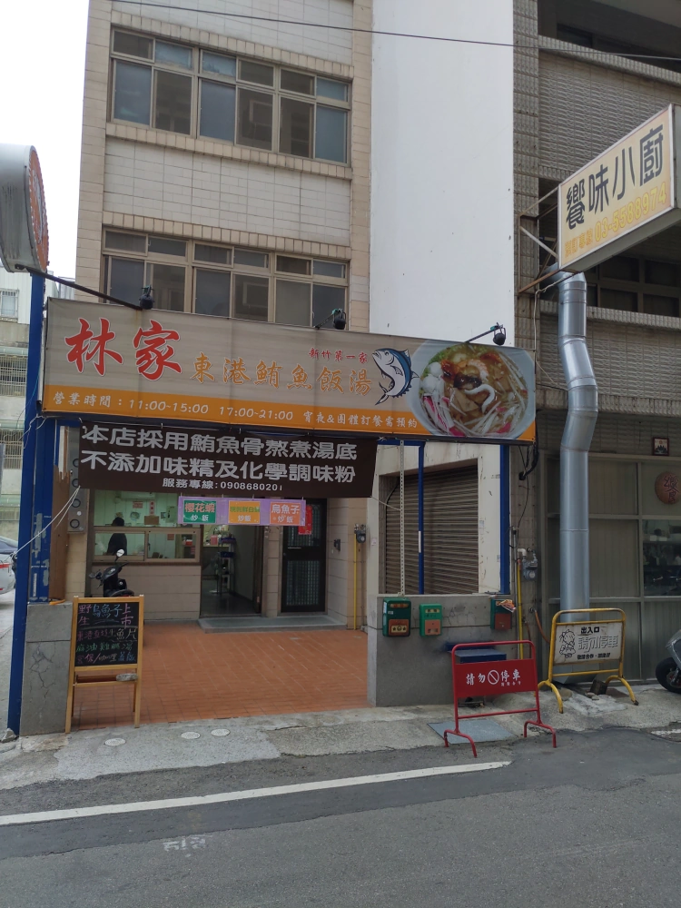
小黑板還列一些菜。 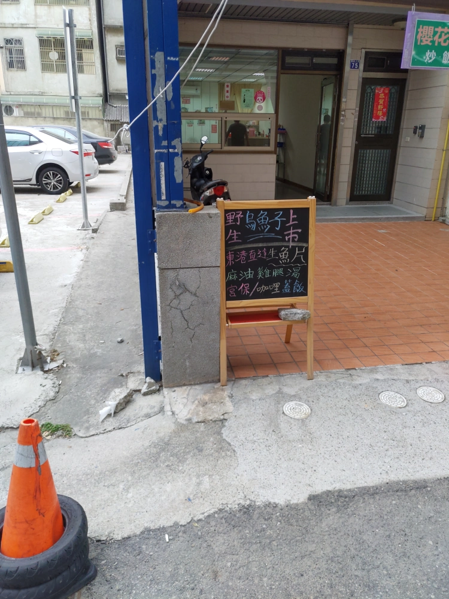
店內沒啥裝潢，但也乾乾淨淨。 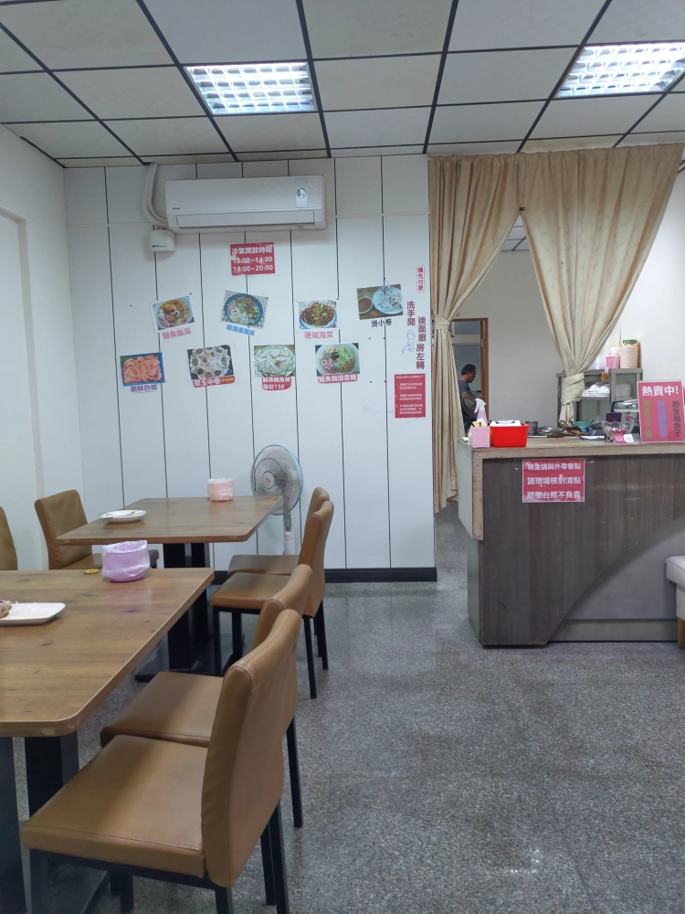 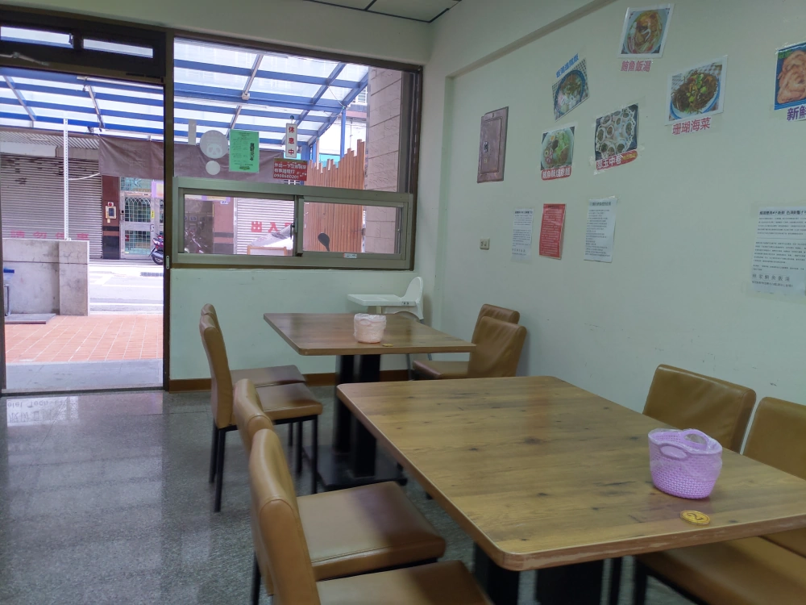
菜單，可以看到大量使用東港海鮮。 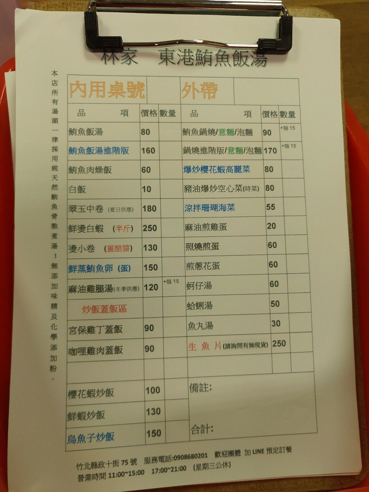
店名是鮪魚飯湯，當然就點了 鮪魚飯湯進階版，湯頭很鮮美，老闆說是恆溫熬煮的湯頭，減少普林的量，不加味精。料也很豐富，有鮪魚片，蝦子，蛤蜊，花枝，魚丸等，分量也大， 一開始覺得吃不完，沒想到最後竟然拚完了。 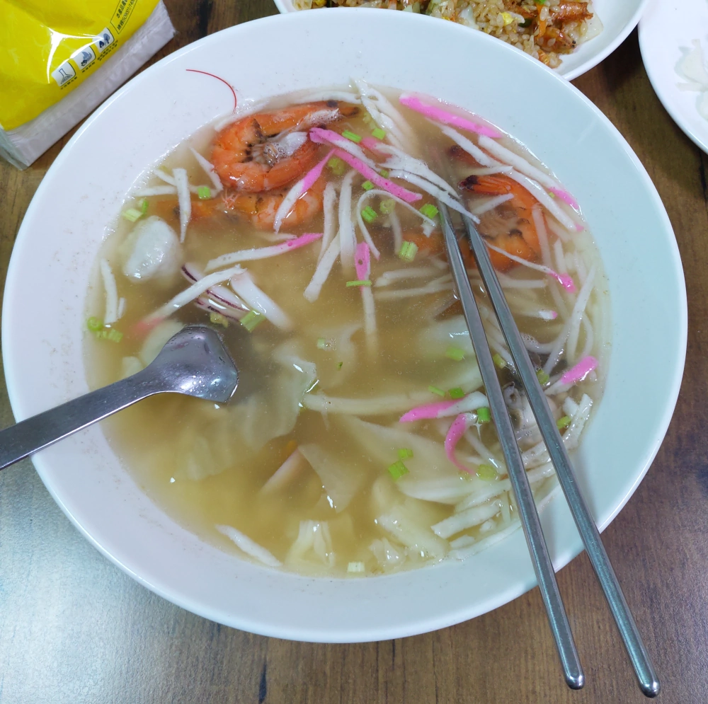
蝦子跟蛤蜊特別放大給讀者看，蝦子有點黑色，可是這正是沒使用化學藥劑的象徵，店家解釋文在下一張圖片。 我剝蝦殼，蝦殼跟肉沒有黏在一起，不會難剝，吃起來也感覺新鮮。 蝦子不大，可是蝦味還不錯。還有更小的蝦，是幾隻櫻花蝦，則是整尾咬一咬吃下去。 蛤蠣一樣是東港來的赤嘴，平常也不常見，蚌殼的花紋自然也是少見的。 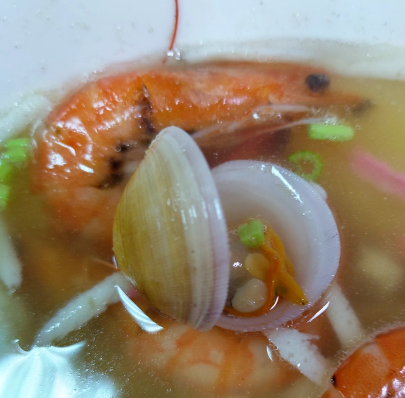 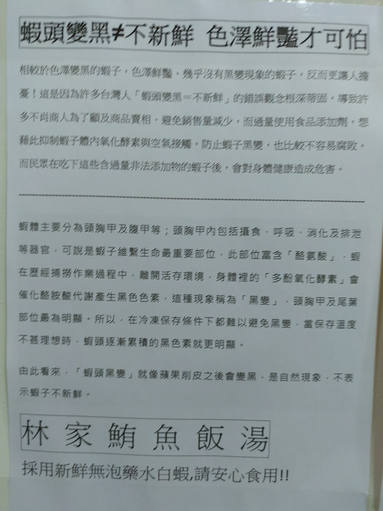
櫻花蝦炒飯與蒸鮪魚蛋。櫻花蝦炒飯 香香的，問老闆是否用豬油，老闆笑笑地說沒用豬油，是他的鑊氣。櫻花蝦自然也是東港來的真貨，整個炒飯蠻好吃的。蒸鮪魚蛋平常也不容易吃到。重點是還很新鮮。 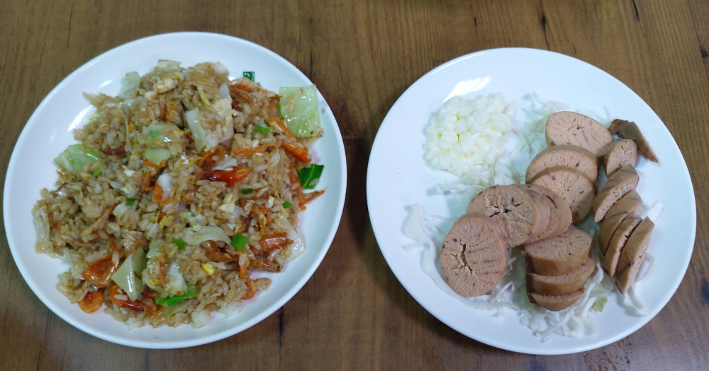
鍋燒意麵進階版，蝦子有點黑色前面解釋過了。湯頭有變化，不是鮪魚飯湯的湯頭，似乎有柴魚的味道，料也因為柴魚湯頭有些變化。 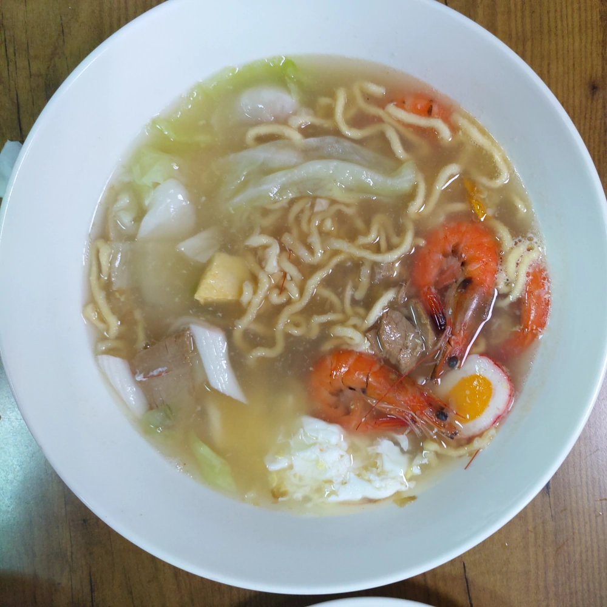
今天最棒的東港直送限量生魚片，我已經吃一片才記得拍照，新鮮的不得了，一份250元，溫度適中，沒有筋，配合那個綠芥末醬油，軟嫩無比，超好吃的，有點冰淇淋的感覺。 也是這時候，問老闆有沒有鮪魚上腹肉，老闆笑笑說要等三、四月，季節不對。他一份上腹肉還只賣1千多，大飯店絕對沒這個價錢。 雖然大飯店搶走蠻多鮪魚好貨，賣得也貴，可是他家裡就是會留一些給他賣。 老闆是想要門檻低一點，讓大家能以東港的價格享受鮪魚上腹肉生魚片。
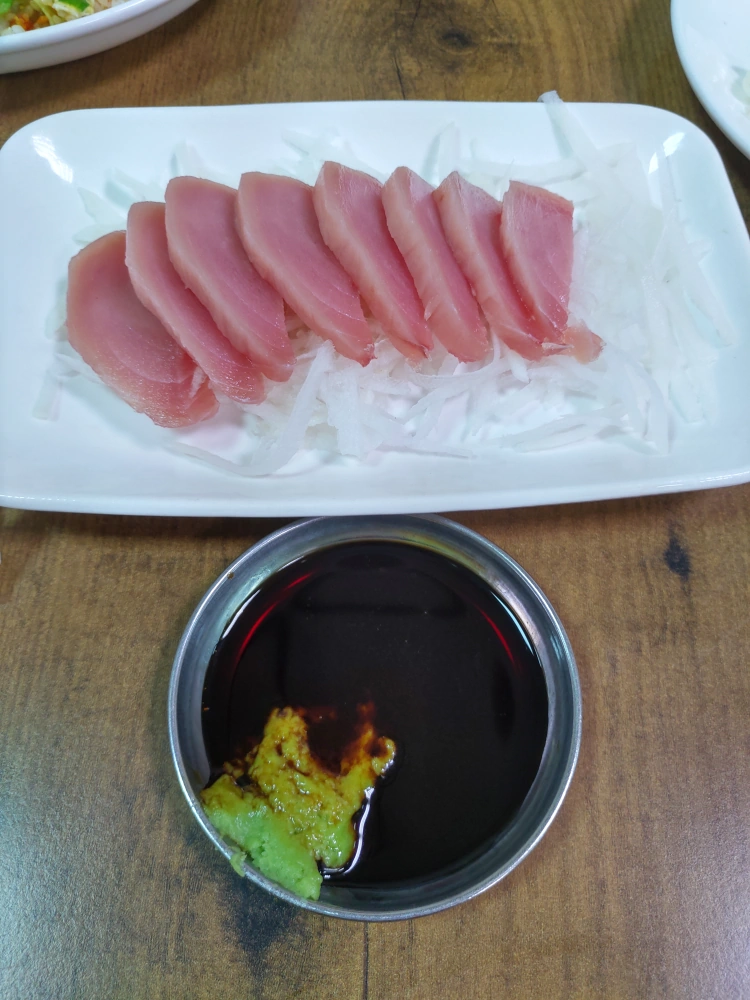
老闆說如果他有什麼特別的料理，例如鮪魚、紅蟳、烏魚膘、野生烏魚子，會公布在粉絲專頁，讓大家預定。所以我一回家，馬上就去他粉絲頁按讚，將來有好的海鮮，才有機會享用。 真是感謝老闆女友住在竹北，把這麼厲害的海鮮店拉來竹北，以後不必一定要往海邊跑了。